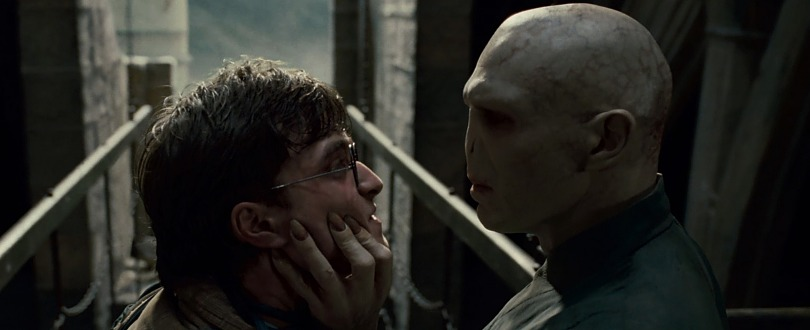

Fantastic Beasts: The Secrets of Dumbledore
Harry Potter: De volta à Hogwarts
Fantastic Beasts: The Secrets of Dumbledore is a 2022 fantasy film directed by David Yates from a screenplay by J. K. Rowling and Steve Kloves. The sequel to Fantastic Beasts and Where to Find Them (2016) and Fantastic Beasts: The Crimes of Grindelwald (2018), it is the third instalment in the Fantastic Beasts film series and the eleventh overall in the Wizarding World franchise.
Its cast includes Eddie Redmayne, Jude Law, Ezra Miller, Dan Fogler, Alison Sudol, Callum Turner, Jessica Williams, Katherine Waterston, and Mads Mikkelsen.
Set several years after the events of its predecessor, the film sees Albus Dumbledore tasking Newt Scamander and his allies with a mission that takes them into the heart of dark wizard Gellert Grindelwald's army.
Always intended to be "at least" a trilogy, the third Fantastic Beasts film was slated for release in November 2020.
It was eventually pushed back to a July 2022 release, and much of the main cast from the first two films confirmed their involvement in March 2020.
Principal photography was set to begin in early 2020, but was postponed due to the COVID-19 pandemic,eventually commencing in September 2020.Johnny Depp, who portrayed Grindelwald in previous films, initially was set to return and filmed one scene for the film, but in November 2020 was asked to resign following a court case finding against him regarding allegations he committed domestic violence; Mikkelsen replaced him later that month. Filming took place until February 2021.
The Secrets of Dumbledore premiered in London on 29 March 2022, and was theatrically released on 8 April 2022 in the United Kingdom and in the United States on 15 April. The film received mixed reviews from critics and has grossed over $389 million worldwide against a budget of $200 million becoming the sixth highest-grossing film of 2022 and the lowest-grossing film in the Wizarding World franchise.
Harry Potter 20th Anniversary: Return to Hogwarts is a 2022 reunion-special-film of the Harry Potter film series that was released on HBO Max on New Year's Day. It marks the 20th anniversary of the release of the series' first instalment, Harry Potter and the Philosopher's Stone (2001). It is produced by Warner Bros. Unscripted Television in association with Warner Horizon and executive produced by Casey Patterson. Daniel Radcliffe, Rupert Grint, and Emma Watson appear in the special, with surviving principal cast members Helena Bonham Carter, Robbie Coltrane, Ralph Fiennes, Jason Isaacs, Gary Oldman, Tom Felton, James Phelps, Oliver Phelps, Mark Williams, Bonnie Wright, Alfred Enoch, Ian Hart, Toby Jones, Matthew Lewis, Evanna Lynch, producer David Heyman, and filmmakers Chris Columbus, Alfonso Cuarón, Mike Newell, and David Yates.
